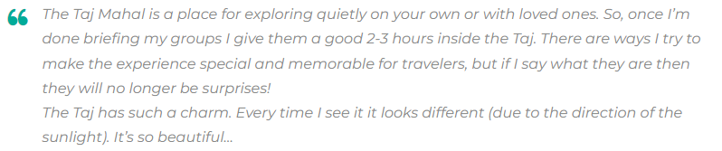

GUIDE
Visiting the Taj Mahal: Everything you need to know
written by Bex Shapiro | August 9, 2017
written by Bex Shapiro | August 9, 2017

Quite honestly, we can’t think of one.
At the very least, there’s no mausoleum more grand, no declaration of love more apparent
than building a marble masterpiece for one’s favorite wife… And no better reason to travel
than seeing its magnificence up close.
After all, this is art. Built in Agra, IndiaIndia between 1631 and 1648, it’s also history. And, of
course, it’s the perfect opportunity to take some otherworldly photos. So, to help visitors
prepare for their Taj Mahal travels, we’ve prepared a little guide, enlisting the help of some
Intrepid experts – from Destination Managers to acclaimed trip leaders – to cover all the
bases.
Coming up: what to bring, where to take the best snaps, what else to see in Agra (and
beyond), and so much more…
That old saying ‘patience is a virtue’ really comes into its own when discussing the Taj Mahal.
Be prepared to be surrounded by hundreds (if not thousands) of people. These include Indian
men, women and children who may ask to take photos with you.
To prepare with the help of other travelers and a local tour guide, consider taking a group tour.
Intrepid have Taj-visiting trips that range from 8-day Golden Triangle tours (now with solo-only
departures!) to 15-day trips dedicated to food, to 19-day trips combining the highlights of India
and Nepal.
If you’re more pressed for time, you can check out the Taj Mahal on a whirlwind day tour from
Delhi. Check out Urban Adventures to see the itinerary that we’d recommend for this. And while
you’re at it, check out their day trips in Delhi, Jaipur, Varanasi and Mumbai!

Always leave your valuables in the hotel. There are lockers available at the Taj but it’s best to have
minimal belongings on you so you don’t spend too much time checking in.
You really only need to bring the following in one small bag:
There is no dress code but you should still be respectful. If you want to enter the mosque, you will
need to cover your head, shoulders and knees.
It gets hot in Agra and there is very little shade, so wear light clothing and make sure you wear
sunscreen. Then again, Agra also gets very cold in winter (Nov-Feb) so layers are your friend too.

Useful tip from Ryan Turner, Intrepid’s Destination Manager for India:
No food is allowed inside.
Cigarettes and lighters are also not allowed.
Tripods and additional lighting equipment need prior permission to be brought with.
Photography inside the mausoleum is prohibited. Most electronics (except cameras and small
video cameras) are not allowed.
Go early, wait for space to explore and photograph, and get yourself away from the crowds (if
possible).

If you walk around to the right side of the Taj (as you approach the east gate), you can get an
amazing photo from the riverbank behind the Taj. (Always go in groups and get a rickshaw to
take you there and back cheaply.)
And simply focus on taking in all the magic. Even Intrepid leaders who see the Taj Mahal monthly
(or more!) remain in awe of it. Sana Jinah, one of the company’s inspiring female tour guides, has
some tips on how to do this:

Everyone wants that iconic shot of themselves at the Taj Mahal. You know the one – where you sit
on the bench and the grandeur of the marble mausoleum forms the backdrop.

But if you’re feeling creative and want to mix things up, there are tons of different angles worth
seeking out.
Below are some photography suggestions from Intrepid’s General Manager in India, Pravin
Tamang. (His photography is amazing – check it out!)
You can also get great photos from the many rooftops of restaurants close to the Taj Mahal.
Unfortunately, Agra does get pretty smoggy, so winter can often have poor visibility earlier in the
day and around sunset. That said, this can make shots look very atmospheric!

First, go back to your hotel room, take a shower, and revel in the relative peace and quiet. Then
explore these cool destinations both in and out of Agra:
The Taj Mahal is, quite clearly, the star of the show in this northern Indian city. But the Agra Fort is
also stunning, especially if you didn’t get a chance to go to the Red Fort in Delhi. A 16th-century
Mughal monument and UNESCO World Heritage site, it’s a sight not to be missed.
One way that Intrepid tries to show visitors a different perspective on the country is by
(sometimes) taking travelers to Sheroes Hangout. Just blocks from the Taj Mahal, it’s a small cafe
run entirely by female acid attack survivors. Here, victims of attacks are employed and tell their
stories. It can be confronting, but also inspiring and memorable in equal measures.
SUBSCRIBE TO INTREPID’S NEWSLETTER FOR MORE TRAVEL GUIDES, COMPETITIONS,
GIVEAWAYS & MORE
Orchha is a town that travelers often overlook. This is a shame, because it’s historic, laid-back
and has a bunch of beautiful temples. It’s not always on tour itineraries, but you CAN visit
it on this 15-day trip from Delhi to Kathmandu Delhi to Kathmandu(cooking demo and palace visit included!).

Jaipur is much more well-known. Also known as the ‘Pink City’, the capital of Rajasthan is full of
chaos, charm and unique architecture. Visit the hilltop Amber Fort, haggle in the enchanting
bazaars, and consider taking a hot air balloon over the city to take it all in.
Pushkar is another underrated town. One of the oldest and most serene towns in India, it’s home
to Pushkar Lake, a sacred spot for Hindus that’s utterly dazzling at sundown. Because of its holy
nature, the vegetarian food here is simply unmissable. Visit on this 15-day trip all around
Rajasthan.
Why? Air pollution from factories in Agra had been slowly turning the Taj Mahal’s ivory-white
surfaces yellow – and this was one way of restoring them to their former glory. The work –
applying a clay traditionally used to clean marble to the entire structure of the Taj – was carried
out by the Archaeological Survey of India. And this work was part of a series of restorative projects
carried out on the historic site.

Check out Intrepid’s range of small group trips in India. We have an adventure for everyone.
—

Born in London and based in Toronto, Bex is happiest anywhere she can connect
with interesting people over good food. She's passionate about sustainable travel
and powerful storytelling, and her favourite cities are New York and Shanghai.
She's also the Senior Editorial Manager at Intrepid. Follow her adventures on
Twitter and Insta @BexShapiro.